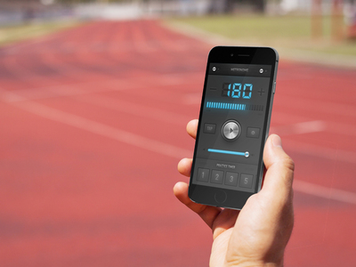
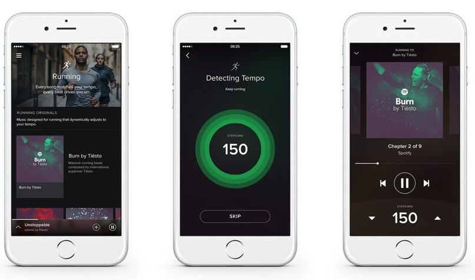
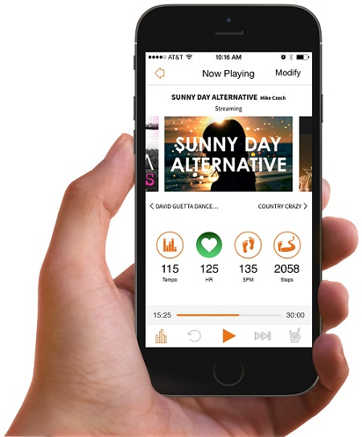
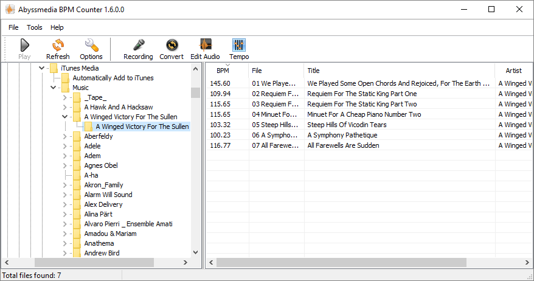
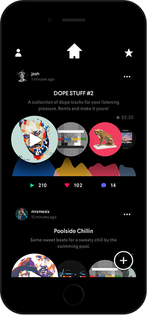

Here's a rundown of the options to find music, a beat or a click at the right pace, including your favourite songs.
Search your local app store for a range of metronome apps, many of them free. I found MetroTimer does the job for an iPhone.
 TAP tap tap tap, TAP tap tap tap, it's MetroTimerAlternatively, if excessive skeuomorphism is your thing then yes, inevitably there are several apps which look like a real metronome.
Using a metronome is particularly good when first retraining yourself to use shorter, faster strides. But after a while it does get a bit boring hence, well, everything else on this web site.
Spotify Running was launched to great fan fare - over-animated micro site alert! - and its primary sell is on the ability to find music to match your tempo, rather than the other way round. However, you can fix the tempo and go with that. It's available for free and premium Spotify users, with the usual ads for those on the free plan, and limits on skipping.
 SpotifyThere's lots of consumer reviews and techie reviews about, but to summarise:
CNET's review has some more detail on the music options -
You get two pools of music to pick from; "Running Originals" and "Running Playlists." The Originals are new, original instrumental tracks created by Spotify for different running moods, including a beat-heavy pick made by dance music DJ Tiesto. Each has several chapters that are a few minutes long.... The Running Playlists is where you'll find playlists that Spotify thinks you'll like, based on your listening history. Each playlist is focused on a genre -- pop, rock, country, hip-hop, etc. -- and uses popular and classic songs to make up the playlist. You cannot see the tracks in those playlists, since they change each time you go running.
Spotify Running not doing it for you? Then Fitmodo have put together some rock and hip hop spotify playists in the 170-190 bpm range (or 85 to 95bpm which works the same). If you search around you'll find more.
Rock My Run - this app's on iOS and Android, and offers lots of stations in different bpm ranges e.g. 140-149bpm or 160+bpm. It can also be set to match your cadence, like Spotify Running. The basic app is free but the problem here is you can't fix the bpm/spm without upgrading to a subscription, and they start at $4.99 a month. The focus here is very much 'hi nrg' too - with frequent build ups and the restlessness of a new song every 2 minutes.
 RockmyrunJogTunes - here we're talking playlists in bpm ranges again, but this time in the form of iTunes and Apple Music playlists - so you either need to already have all the tracks in iTunes (not likely) or else have an Apple Music subscription (not likely either, by all accounts).
DJRun for Android is another app that matches your pace in "Auto mode". You can also use "Pin mode" to fix the bpm but guess what? Yes, that's right, it's upsell time again and you need the pro version for that.
PaceDJ (US only) is on Android and iOS and relies on your own music library. It's another app that likes to match music to your pace. It also has a lot of bpm playlists on its site so that - in theory - you can buy or track down all the individual songs beforehand (as if you had the time...).
Abyssmedia's BPM Counter can analyse music on your PC. If you still have your music library on your PC - in which case I bet you still have some cassettes lying around too - then this does the job nicely.
 BPM Counter sorting the 180 wheat from the chaffFor a Mac you could try your luck with BPM Assistant or Cadence Desktop Pro.
There's also Song BPM but I can't recommend that - it can return the same song three times with different answers and varies wildly from the BPM counter results. Its also not guaranteed to find the song you're after, whereas BPM Counter you can point at anything on your desktop. Song BPM uses the Spotify API for the song data but it's not clear who/where the bpm calculation comes from.
There's no shortage of these, a category in their own right, where measuring bpm is of course of interest for different reasons. Here's just a couple of examples - they'll often do a lot more than you may need or want.
Pacemaker is iOS only, detects bpm and works with iTunes or Spotify. This is a fully featured mixtape app which has picked up some design awards along the way.
 Pacemaker - a party on your phonedjay is a paid app which also integrates with your iTunes library and Spotify - but the bpm detection feature is for iTunes only. In the help forums there are some quibbles about its accuracy. This one keeps Gary Numan happy though by being available for Androids as well as iPhones and iPads.